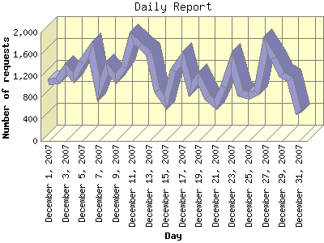

Report generated by Analog 6.0 and Report Magic 2.21
|
Web Server Statistics for "Harish Narayanan (hnarayan) - December 2007" Report generated by Analog 6.0 and Report Magic 2.21 |
The Daily Report identifies the activity for each day within the reporting period. Remember that one page hit can result in several server requests as the images for each page are loaded.

| Day | Number of requests | Number of bytes transferred | Percentage of the bytes | Percentage of the requests | |
|---|---|---|---|---|---|
| 1. | December 1, 2007 | 1,083 | 64.095 MB | 3.05% | 2.92% |
| 2. | December 2, 2007 | 1,099 | 59.478 MB | 2.83% | 2.96% |
| 3. | December 3, 2007 | 1,334 | 42.076 MB | 2.00% | 3.59% |
| 4. | December 4, 2007 | 1,158 | 23.467 MB | 1.12% | 3.12% |
| 5. | December 5, 2007 | 1,444 | 55.863 MB | 2.66% | 3.89% |
| 6. | December 6, 2007 | 1,685 | 87.239 MB | 4.15% | 4.54% |
| 7. | December 7, 2007 | 936 | 58.590 MB | 2.79% | 2.52% |
| 8. | December 8, 2007 | 1,343 | 70.078 MB | 3.33% | 3.62% |
| 9. | December 9, 2007 | 1,156 | 57.093 MB | 2.72% | 3.11% |
| 10. | December 10, 2007 | 1,356 | 104.756 MB | 4.98% | 3.65% |
| 11. | December 11, 2007 | 1,900 | 131.330 MB | 6.25% | 5.12% |
| 12. | December 12, 2007 | 1,756 | 149.421 MB | 7.11% | 4.73% |
| 13. | December 13, 2007 | 1,618 | 87.095 MB | 4.14% | 4.36% |
| 14. | December 14, 2007 | 921 | 52.723 MB | 2.51% | 2.48% |
| 15. | December 15, 2007 | 710 | 19.011 MB | 0.91% | 1.91% |
| 16. | December 16, 2007 | 1,292 | 84.242 MB | 4.01% | 3.48% |
| 17. | December 17, 2007 | 1,522 | 45.264 MB | 2.15% | 4.10% |
| 18. | December 18, 2007 | 955 | 55.127 MB | 2.62% | 2.57% |
| 19. | December 19, 2007 | 1,160 | 98.154 MB | 4.67% | 3.12% |
| 20. | December 20, 2007 | 810 | 41.313 MB | 1.97% | 2.18% |
| 21. | December 21, 2007 | 679 | 60.280 MB | 2.87% | 1.83% |
| 22. | December 22, 2007 | 998 | 55.264 MB | 2.63% | 2.69% |
| 23. | December 23, 2007 | 1,450 | 32.369 MB | 1.54% | 3.90% |
| 24. | December 24, 2007 | 878 | 53.986 MB | 2.57% | 2.36% |
| 25. | December 25, 2007 | 836 | 49.114 MB | 2.34% | 2.25% |
| 26. | December 26, 2007 | 902 | 65.699 MB | 3.13% | 2.43% |
| 27. | December 27, 2007 | 1,764 | 113.556 MB | 5.40% | 4.75% |
| 28. | December 28, 2007 | 1,526 | 121.668 MB | 5.79% | 4.11% |
| 29. | December 29, 2007 | 1,228 | 61.421 MB | 2.92% | 3.31% |
| 30. | December 30, 2007 | 1,135 | 81.475 MB | 3.88% | 3.06% |
| 31. | December 31, 2007 | 510 | 20.488 MB | 0.97% | 1.37% |
Most active day December 11, 2007 : 460 pages sent. 1,900 requests handled. 137,709,358.00 served.
Daily average: 1,198 requests handled. 67.798 MB served.
This report was generated on February 15, 2008 12:08.
Report time frame December 1, 2007 00:09 to December 31, 2007 23:58.
| Web statistics report produced by: | |
 Analog 6.0 Analog 6.0 |  Report Magic 2.21 Report Magic 2.21 |